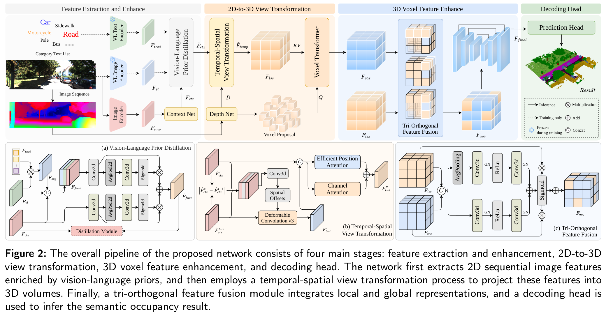
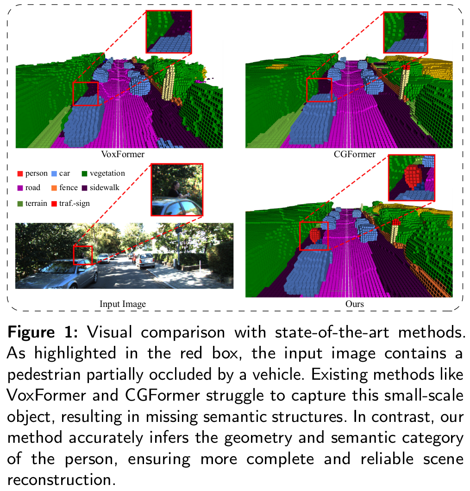
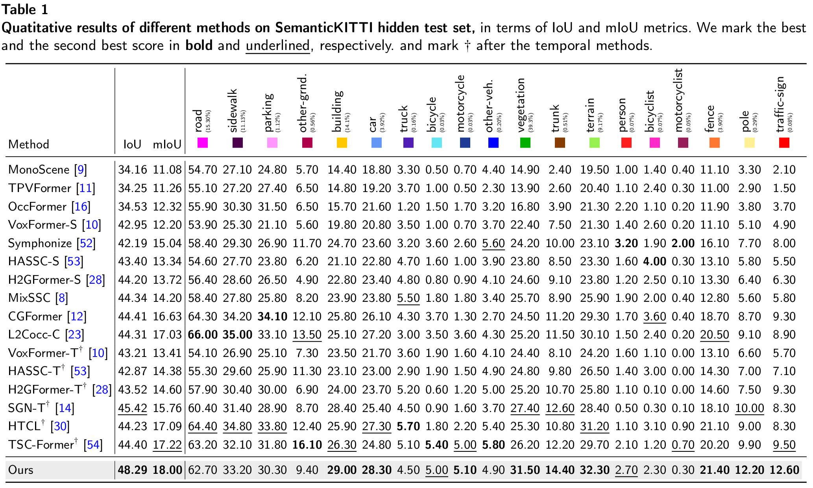
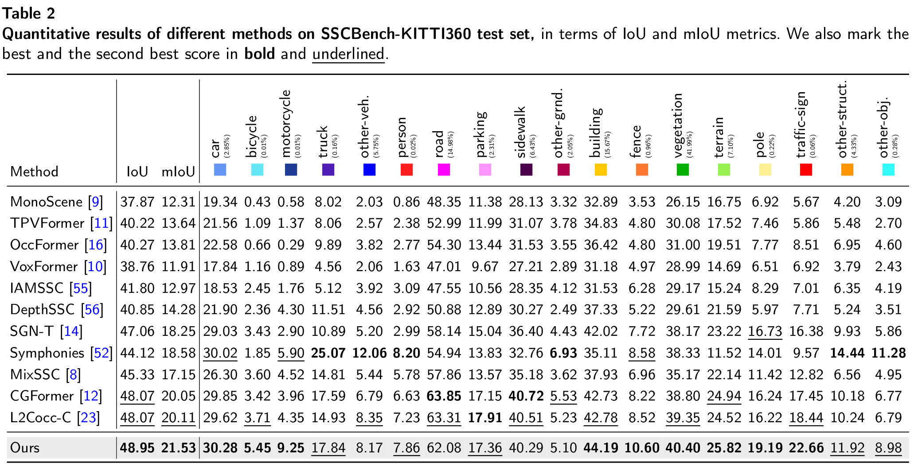
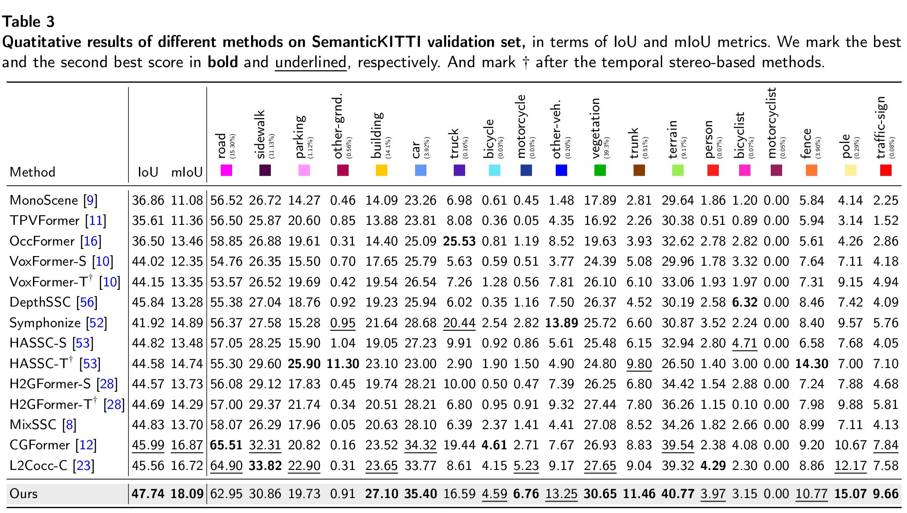
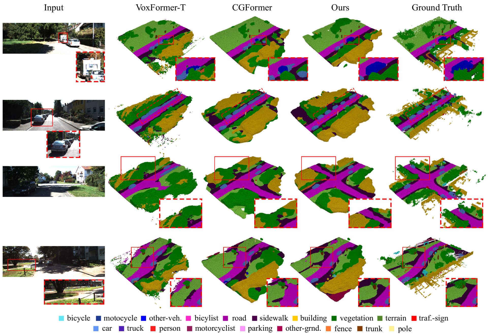

Camera-based Semantic Scene Completion suffers from severe geometric ambiguities caused by the inherent loss of depth and dynamic occlusions in driving scenarios. While integrating temporal context mitigates these issues, existing methods struggle to explicitly align dynamic objects across frames and often destroy fine-grained anisotropic structures during 3D feature aggregation. In this work, we present a unified camera-based framework that tightly couples multi-modal semantic priors with precise spatial-temporal alignment. We introduce a Vision-Language Prior Distillation module that injects knowledge from foundation models into the 2D perception branch, establishing robust semantic anchors for heavily occluded regions and long-tail classes. Building upon these priors, our Temporal-Spatial View Transformation explicitly models cross-frame motion residuals via a difference-guided mechanism, ensuring accurate temporal feature alignment even under continuous ego-motion. To preserve the directional cues critical for 3D structures, we design a Tri-Orthogonal Feature Fusion module that decouples global-local context integration across three independent axes, preventing the geometric distortion typical of standard isotropic pooling. Extensive experiments demonstrate that our framework delivers highly competitive performance on the SemanticKITTI and SSCBench-KITTI360 benchmarks, attaining an mIoU of 18.00% and 21.53%, alongside an IoU of 48.29% and 48.95% respectively, confirming its substantial advantages in geometric precision and semantic understanding.





